拆开显卡 · 切开封装 · 钻进硅片 · 看清一帧画面的完整旅程
一张显卡 = 一块 PCB + 一颗 GPU 封装 + 一圈显存 + 供电模块 + 一整套散热。你平时看见的只是最上面这层塑料外壳和两个风扇。
为什么每个位置都长这样？风扇朝下吹、鳍片顺着机箱风道、金手指在底边、输出口在尾部——这些位置都被机箱形状和主板插槽定死了。没有这一整套散热，三百瓦的芯片几秒钟就会过热降频；没有独立供电，主板插槽只给 75 瓦，根本喂不饱它。
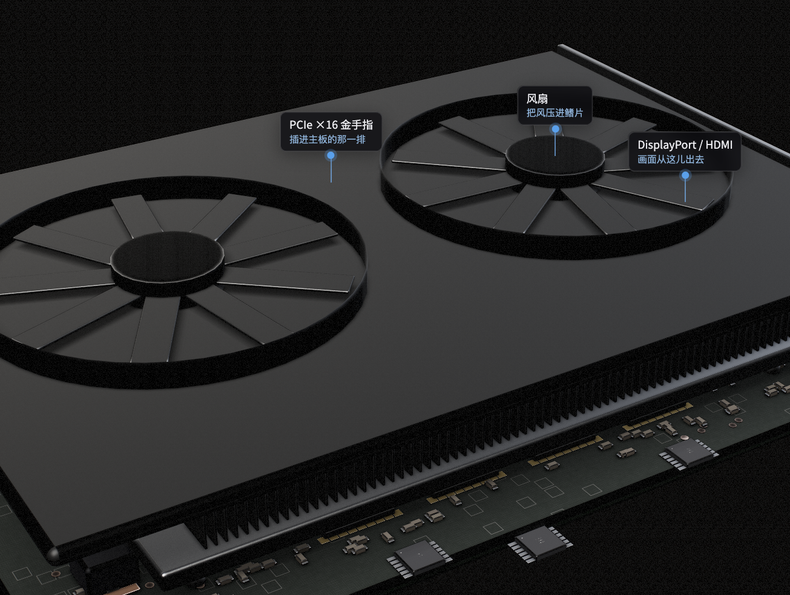
▲ 实时渲染：金手指、供电区、双风扇外壳
贴着芯片的是均热板——一个抽了真空的铜腔，里面有一点水；上面焊着七十片铝鳍片；再往上才是风扇。
芯片只有指甲盖大，三百瓦从这么小的面积散不出去。均热板先把热摊到手掌大，鳍片再摊到几千平方厘米，风扇才吹得走。为什么是水蒸气而不是实心铜？铜靠传导，热要一点点爬；水在热端汽化、冷端凝结，整块板几乎同一个温度——同样厚度导热快十倍。
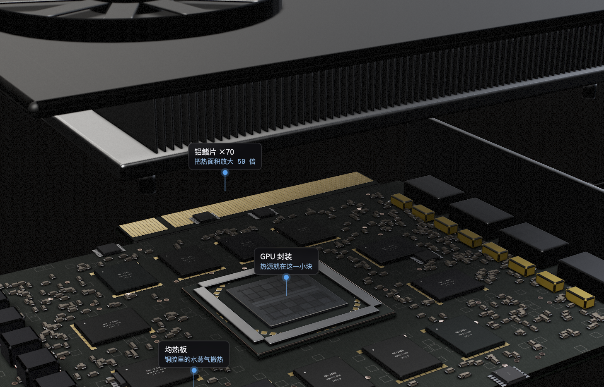
▲ 散热组件抬起：均热板 + 鳍片阵列 + 风扇
把 GPU 封装切开一半：从上到下是裸露的硅片、一圈金属加强环、多层封装基板、几百颗锡球。剖面上能看到基板有八层铜和介质交替。
为什么中间要垫这块基板？硅片上的触点间距只有几十微米，而 PCB 最细只能做到零点几毫米，差了十倍以上。基板就是把"密的"扇出成"疏的"那个转接层。为什么硅片裸露、不盖金属盖？多一层界面就多一份热阻，功率太大，宁可让散热器直接压在硅上，用加强环防止压歪。
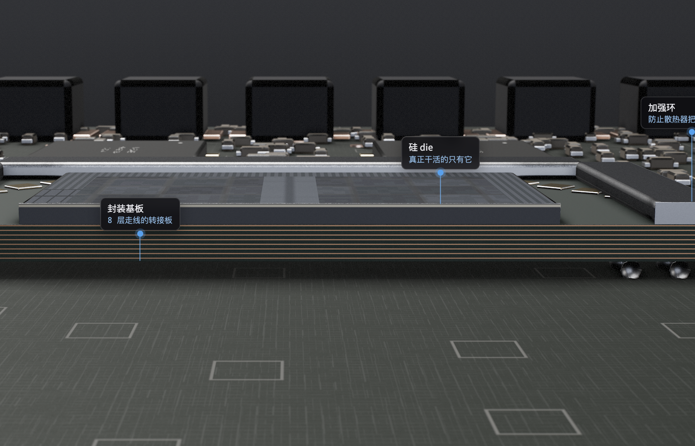
▲ 剖面：硅片 / 加强环 / 八层基板 / 锡球阵列
把硅片放大：大部分面积是几十个一模一样的方块——流式多处理器（SM）；中间横着一条 L2 缓存；左右两侧边缘是显存控制器；底边一角是显示引擎和 PCIe。
GPU 的算力来自把同一个 SM 复制粘贴几十上百次，而不是把一个核做得多聪明。为什么 L2 放正中间？所有 SM 都要访问它，放中间到谁的距离都差不多。为什么显存控制器贴边？它要出硅片连到外面的颗粒，走线越短越好。
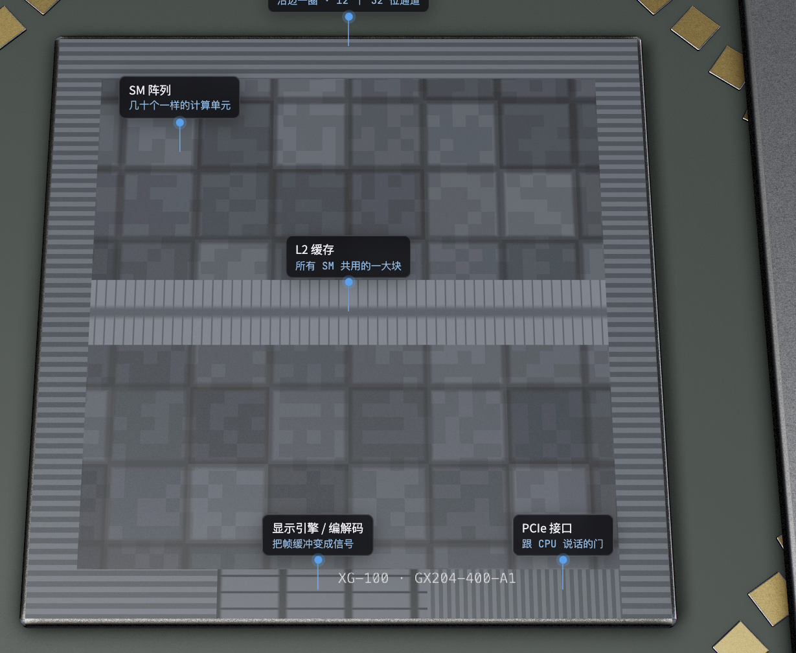
▲ die 版图：SM 阵列 / L2 / 显存控制器 / 显示引擎 / PCIe
一个 SM 分成四个分区，每个分区有一个调度器、一块寄存器堆、一排简单的算术通道、一个 Tensor Core、几个访存单元。底部整条是共用的 L1 / 共享内存。
如果换成 CPU 那种大核，一样的面积只能放几个，而且大部分晶体管在做分支预测和乱序执行——对"一百万个像素做同样的事"这些一点忙都帮不上。
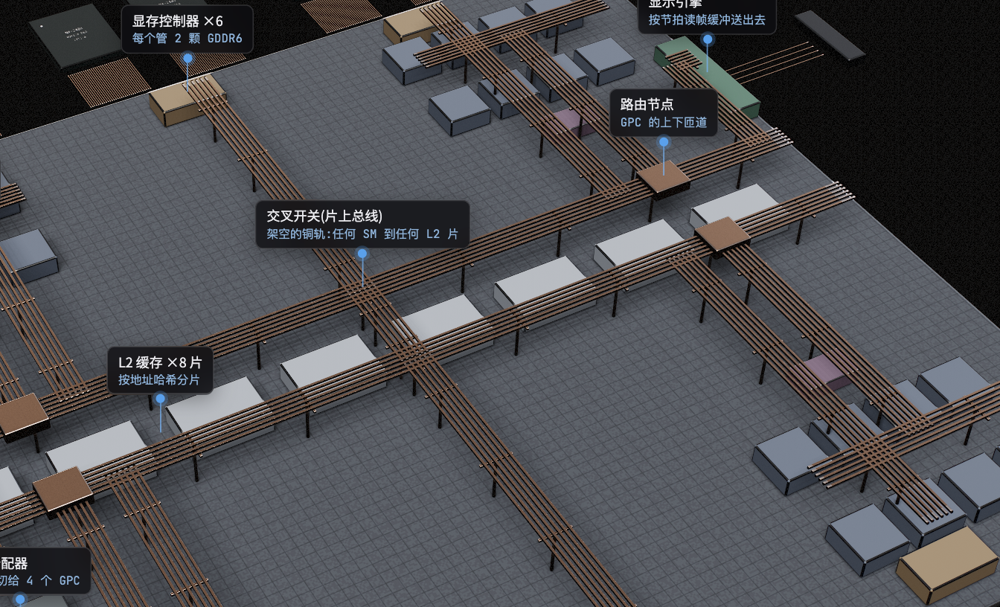
▲ SM 内部：调度器 / 寄存器堆 / FP32 通道 / Tensor Core / LD-ST
把这颗芯片放大成一座城：四角是四组 GPC（每组八个 SM 加一个光栅引擎），中间一排是八片 L2，上下边是六个显存控制器，左边是 PCIe、命令处理器和工作分配器，右边是显示引擎。
逻辑块的头顶架着铜色轨道，这就是交叉开关——芯片里的总线。为什么互连是"架空"的？芯片里晶体管在最底层，上面叠了十几层铜金属层专门走线——轨道跑在逻辑块头顶，这是真实结构，不是比喻。
为什么 L2 要切成八片摆在中间？一块大缓存只有一个门，几十个 SM 挤一个门就堵；切成片、按地址分散，才能同时服务多个请求。
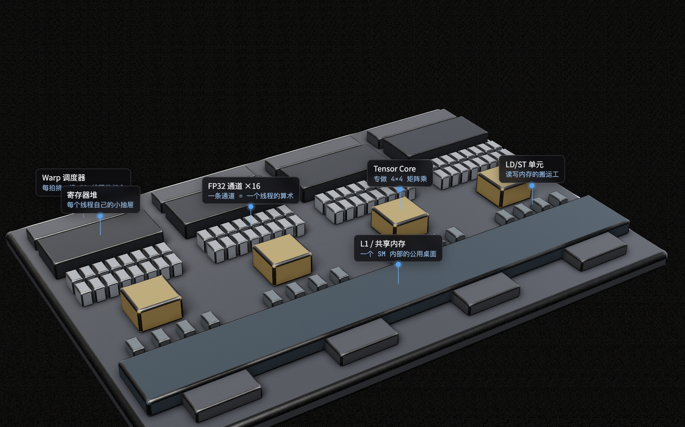
▲ die 内部：四组 GPC + 八片 L2 + 六个显存控制器 + 架空的交叉开关
CPU 不画图，它只写一张"清单"：画哪些三角形、用什么材质、放在哪。这张清单被切成十六片，走 PCIe 的十六条通道并行进来，在 PCIe 块拼回整张，交给命令处理器解析，再由工作分配器切成四份，沿总线送到四个 GPC，最后落到每一个 SM 上。
为什么 PCIe 带宽"只有"32 GB/s 却够用？过去的只是清单和少量新数据；真正的大流量（纹理、顶点、帧缓冲）全在芯片内部和显存之间跑。
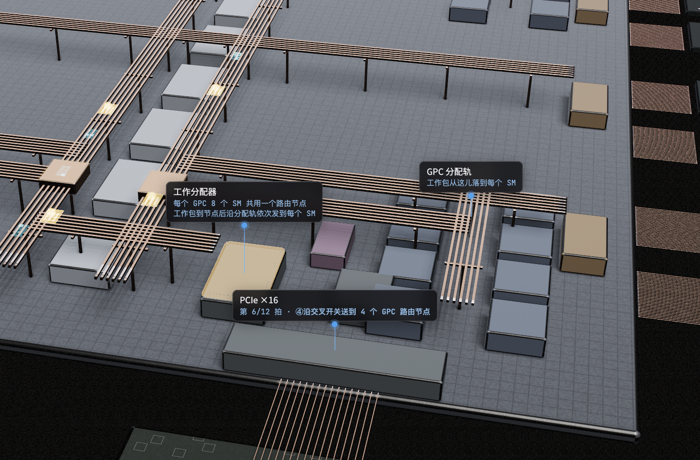
▲ 命令卡切成 16 片走 PCIe 通道 → 工作分配器 → 四个 GPC
一个 SM 要一块数据，请求带着地址上了交叉开关。地址经哈希决定去八片 L2 里的哪一片；L2 没有 → 转给显存控制器 → 控制器向片外颗粒发读命令 → 颗粒沿 32 根数据线连发八个 32 位字 → 控制器拼成一条 256 位缓存行回填 L2 → 再沿原路送回 SM。
为什么按地址哈希分片，而不是按 SM 分？同一份数据可能被任何 SM 用到，按地址分才能让所有 SM 找到同一个地方。为什么一次拿 256 位而不是只拿要的 32 位？去一趟显存要几百个周期，路费太贵，顺手把相邻数据一起带回来，下次大概率用得上。
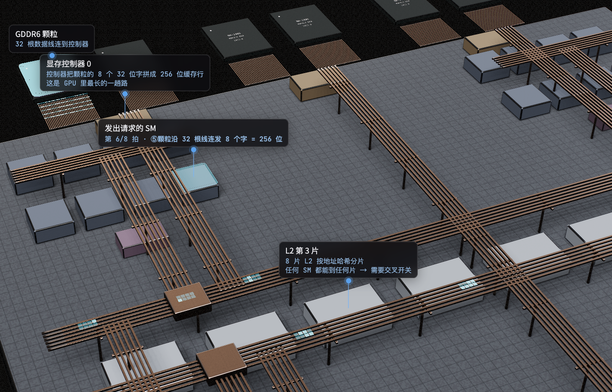
▲ 请求上总线 → L2 未命中 → 显存控制器 → 颗粒 → 缓存行原路返回
顶点数据从 L2 取出送进 SM 做顶点着色（算三个角在屏幕的位置）→ 交给 GPC 里的光栅引擎切成它盖住的像素格 → 片元分给四个 SM 做片元着色 → 回到 ROP 做深度测试和混合，沿总线写进显存里的帧缓冲。
为什么着色用通用 SM，光栅化却是专用电路？着色每个游戏都不一样，必须可编程；而"三角形变像素格"这一步几十年没变过，做成固定电路最省面积也最快。
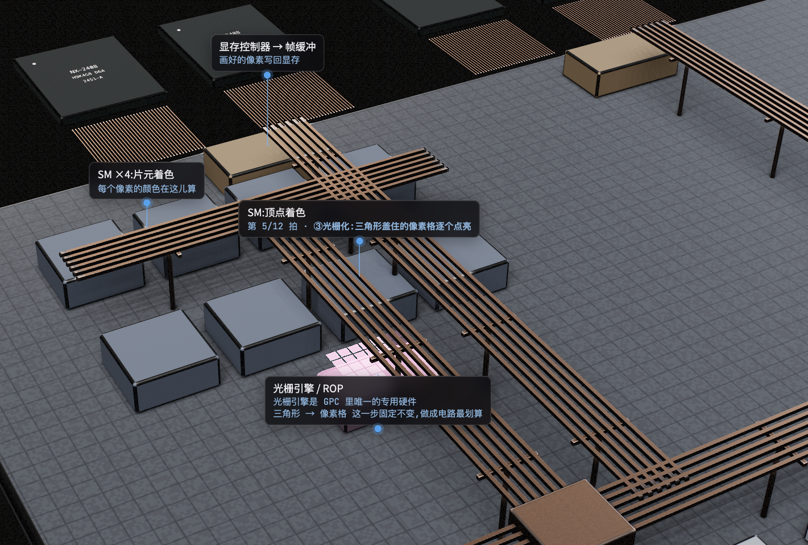
▲ 顶点着色 → 光栅化 → 片元着色 → ROP → 帧缓冲
调度器一次发一条指令，三十二个线程同时执行同一条。程序里写的是"一个线程做什么"，硬件把它复制三十二份同步跑。
但遇到 if 判断就麻烦了：一半线程走 if、一半走 else，硬件只能先让一半干活、另一半在旁边等着，再反过来跑一遍。两条路都走，时间翻倍。这就是为什么写 GPU 程序要尽量让相邻线程走同一条路。
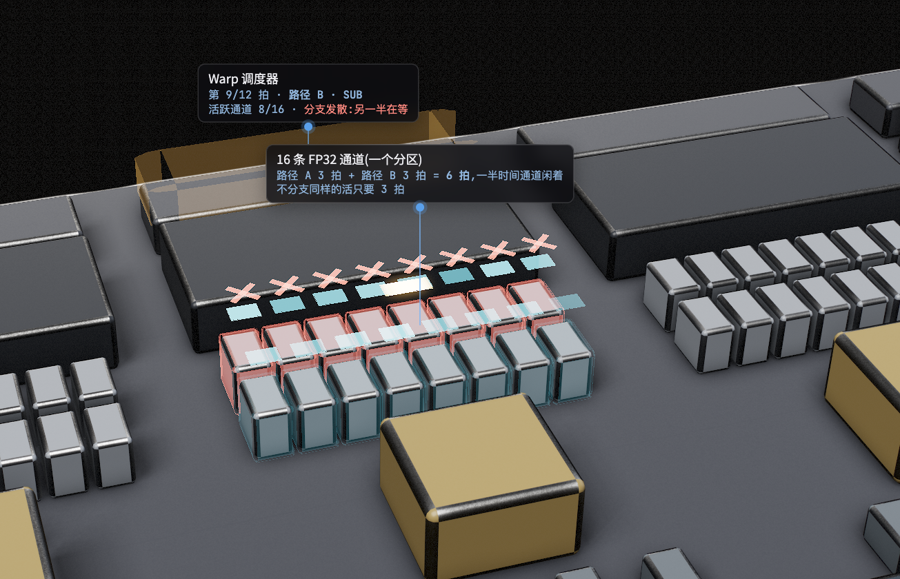
▲ 分支发散：一半通道被屏蔽（红叉），3 拍变 6 拍
同一个读请求，一级级找不到、一级级往远走：
| 层级 | 在哪 | 大约多少周期 |
|---|---|---|
| 寄存器 | 紧贴算术通道 | 1 |
| L1 / 共享内存 | SM 块里 | ~30 |
| L2 切片 | 上总线走到 die 中央 | ~200 |
| 显存 | 芯片外面 | ~500 |
快的存储为什么不能做大？每比特要六个晶体管，占地大、发热大，做几十 GB 根本放不下。GPU 的应对办法不是把路修短（做不到），而是在一个 SM 上同时挂几十组线程：谁在等数据，就先算别人的——用足够多的活，把等待藏起来。
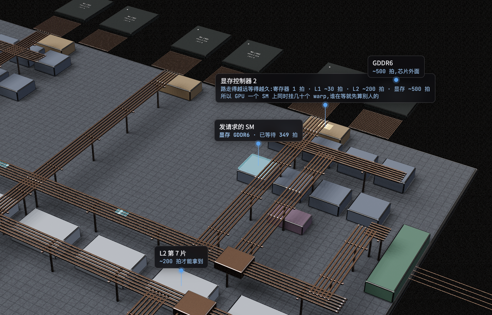
▲ 同一个请求逐级未命中，周期计数器跟着路程涨
算好的一帧就是显存里一块连续的像素数组——帧缓冲。显示引擎按显示器的节拍，一行一行向显存控制器要数据，请求沿总线过去，一行像素回来，再串行送出芯片。
画面为什么会撕裂？GPU 在写下一帧的同时，显示引擎正在读上一帧，读到一半被换掉了——上半屏是旧帧、下半屏是新帧。垂直同步就是让 GPU 等显示引擎读完再换。
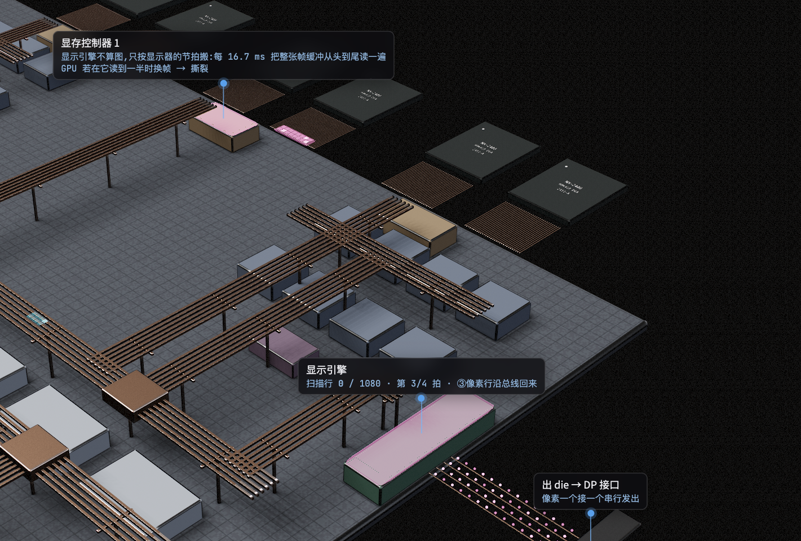
▲ 显示引擎按行索取，像素行沿总线回来后串行送出 die
一个像素是红绿蓝各八位共二十四位。接口把它们拆成一个个比特，分到四对差分线上串行发出。
为什么是差分？一对里两根线传相反的信号，接收端只看两根的差值。外面的干扰对两根线影响一样，一减就没了。USB、PCIe、HDMI，所有高速接口都是这个原理。
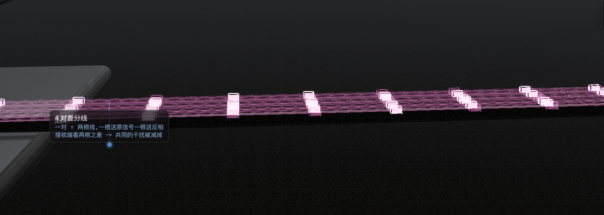
▲ 四对差分线，同一比特两根线一亮一暗
液晶屏从后往前是六层：背光一直亮着 → 后偏光片只放一个方向的光过去 → 液晶层在电压控制下把光的方向转一个角度 → 前偏光片按这个角度决定放行多少 → 彩色滤光片染成红绿蓝。
透过率等于转角的正弦平方（马吕斯定律）。红色那列液晶不转，全被前偏光片挡住，所以是黑的；蓝色那列转了九十度，全透过，所以最亮。
为什么液晶的黑不够黑？液晶转到头也会漏一点光，而背光从来不关，所以它的黑其实是深灰。OLED 每个像素自己发光，不亮就是真黑——这是两种屏幕最根本的差别。
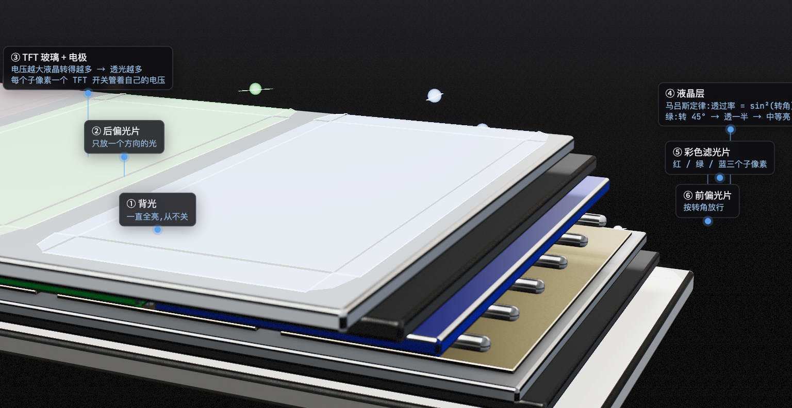
▲ 光带着偏振方向穿过六层，三列子像素透光量各不相同
从 CPU 写下一张清单，到几十个 SM 协同计算，沿着片上总线搬运数据，写进帧缓冲，串行发出芯片，最后点亮几百万个像素——每一步的设计背后，都是一个具体的取舍：
| 设计 | 为了解决什么 |
|---|---|
| 封装基板 | 硅片触点间距比 PCB 细十倍以上，需要扇出 |
| L2 切成八片 | 一个门会被几十个 SM 挤堵 |
| 交叉开关 | 任何 SM 都要能到任何一片 L2 |
| 一次取 256 位缓存行 | 去一趟显存几百周期，路费太贵 |
| 一个 SM 挂几十组线程 | 路没法修短，只能用足够多的活把等待藏起来 |
| 差分线 | 干扰同时加在两根线上，做减法就抵消了 |
点击阅读原文可以打开交互版本，自己拖动视角、切换十五个站点，还能一拍一拍地看数据在芯片里怎么走。